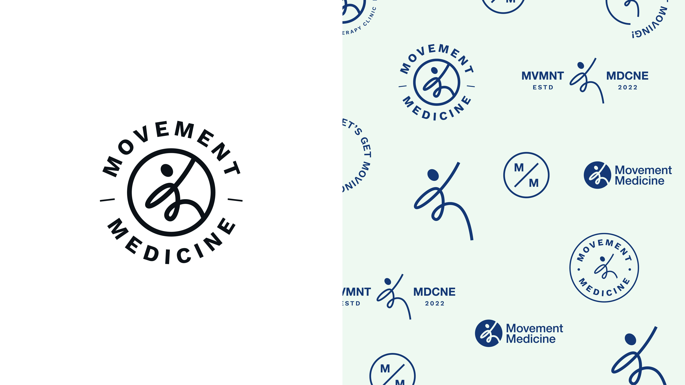
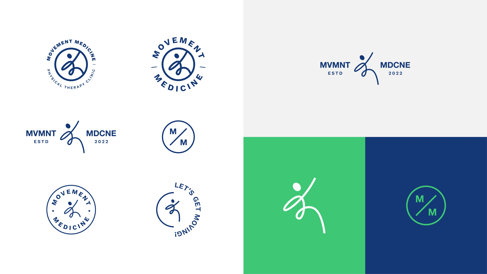
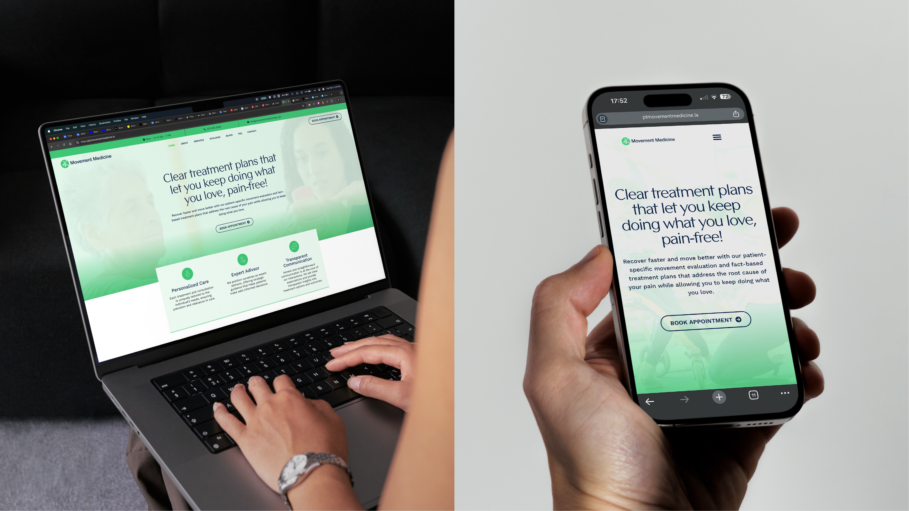
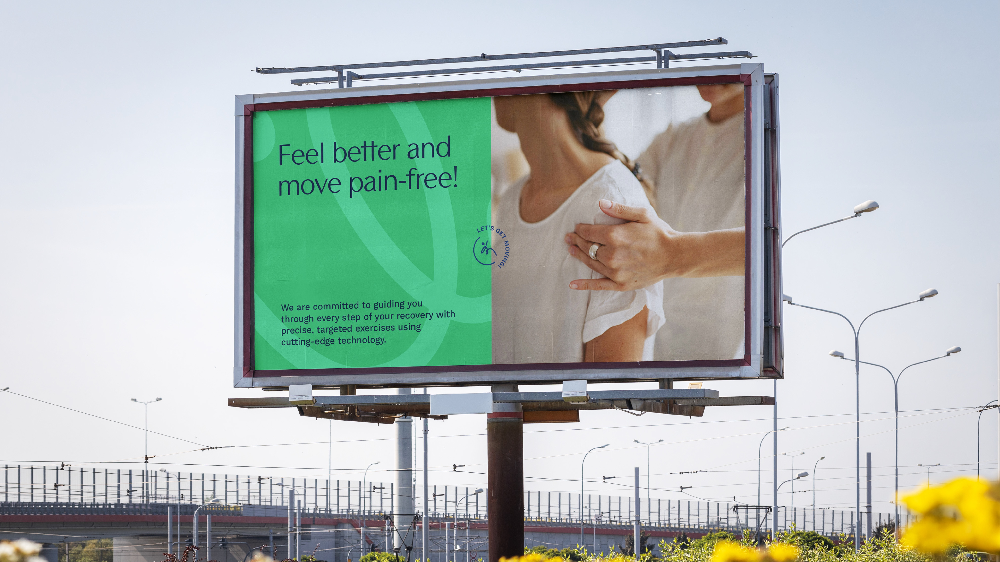
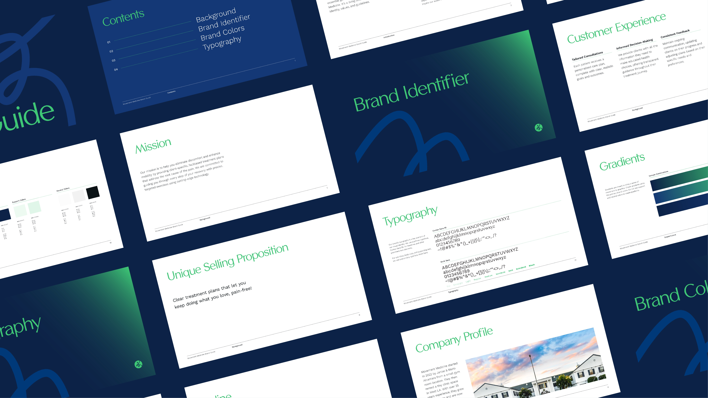
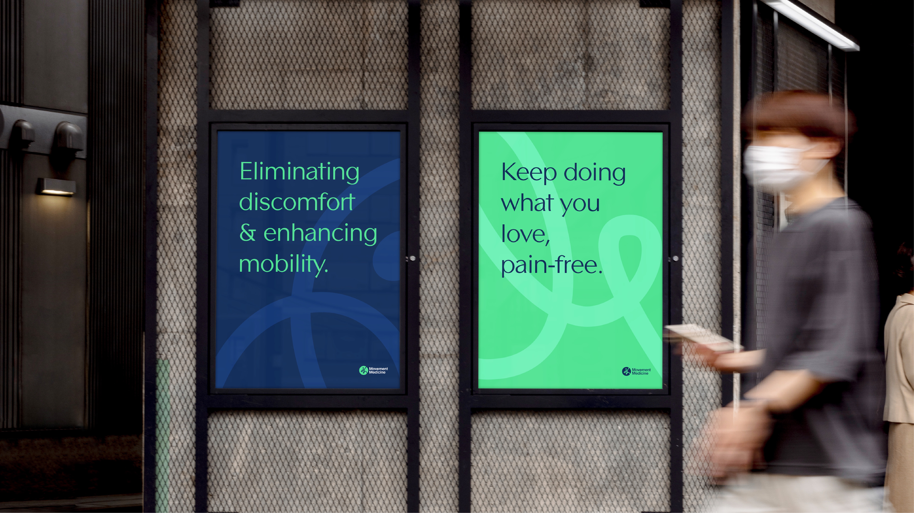

Position Movement Medicine, a physical therapy clinic in West LA, as a premium, community-centered practice in a competitive market. The brand needed to feel modern and credible while remaining warm and approachable to new patients.
We built the brand from the ground up, starting with strategy to define the clinic's positioning, voice, and visual direction. The identity was designed to convey movement, trust, and vitality. The website was then developed to translate that identity into a seamless digital experience optimized for patient acquisition.
A cohesive brand and web presence that gave Movement Medicine the credibility to compete in West LA's premium wellness market. Bookings increased by 2x following the launch.







